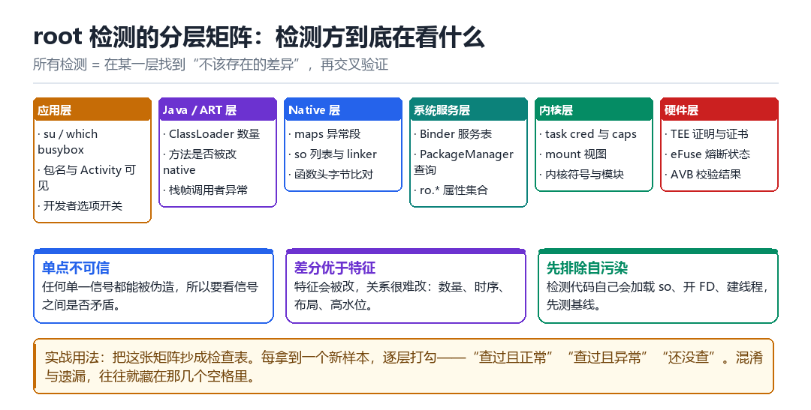

Android root 检测
把前面所有内容串起来
检测不是“找一个特征”，而是“建立一套互证的证据链”。
4.1 分层的意义
把检测按层排开，好处是：每一层的能力与代价不同，可以按需组合；而且当某一层被绕过时，你能立刻知道“剩下几层还在不在”。

4.2 六层逐一拆解
4.2.1 应用层
最直白的一层：看有没有 su 可执行文件、有没有已知 root 管理应用的包名、开发者选项是否开启、adb 是否可连。优点是实现简单，缺点是全都可以被隐藏，只能作为“辅助信号”。
4.2.2 Java / ART 层
这一层看的是“运行时结构是否合理”：ClassLoader 的数量与来源、某个方法是否突然从 Java 实现变成 native、调用栈里是否出现不该出现的帧。L02 讲的 Java Hook 会在这个层面留下最强痕迹。
4.2.3 Native 层
读 /proc/self/maps，检查每一段是否有合法的 back-file；遍历 linker 的 solist，看有没有空 soname 的模块；对关键函数做 CRC 或反汇编比对。这是 F11 那张总表的正面战场。
4.2.4 系统服务层
通过 Binder 查询 PackageManager、ActivityManager 的结果，与本地观察做对比。比如“PackageManager 说某应用没安装，但 /data/app 下有目录”。
4.2.5 内核层
读 task 的 cred 与 capability 集合，检查 mount 视图与 namespace，扫描内核符号与已加载模块。这一层普通 App 读不到，需要内核态能力——所以它通常出现在“壳”或专门的检测 SDK 里。
4.2.6 硬件层
第 03 章的三绿。它最不容易伪造，但也最容易被“绕过而不是破解”——所以必须和上面几层交叉验证。
4.3 三条铁律
- 单点不可信。任何一个信号都能被单独伪造，所以要问的是“这些信号之间是否矛盾”。
- 差分优于特征。特征会被改名、改路径；但数量、时序、布局、内存高水位，这些“关系”很难改。
- 先排除自污染。检测代码自己也会加载 so、开 fd、建线程。先跑一遍空检测拿基线，再下结论。
4.4 一个可落地的检测骨架
signals = []
def check_maps():
for line in open('/proc/self/maps'):
# 每段必须能回溯到真实文件，或属于合法匿名区
if is_anon_exec(line) and not in_expected_range(line):
signals.append(('anon_exec', line))
def check_threads():
base = load_baseline() # 干净环境采的基线
now = count_threads()
if now - base > THRESHOLD:
signals.append(('thread_delta', now, base))
def verdict(signals):
# 单点不算数：至少两类不同层级的信号同时命中
return len({s[0].split('_')[0] for s in signals}) >= 24.5 本章自测
- 六层检测各自最擅长发现什么？各自最容易被什么绕过？
- 为什么“差分”比“特征”更难对付？
- 设计一条规则：如何在不误伤正常 App 的前提下，发现“线程数异常增长”？
- 如果只能保留三层检测，你保留哪三层？理由是什么？
4.6 深入：规则怎么定阈值
检测规则最难的不是“写判断”，而是“定阈值”。阈值太低误报，太高漏报。经验做法是先采样、再看分布、最后取分位点。
samples = [measure() for _ in range(200)] # 在干净设备上采
samples.sort()
p50 = samples[len(samples)//2]
p99 = samples[int(len(samples)*0.99)]
# 阈值取 p99 * 1.5：只抓真正离谱的离群点
THRESHOLD = p99 * 1.54.7 一个真实的误报案例
某检测 SDK 用“进程中是否存在匿名可执行映射”判断注入。上线后大量正常用户被误判——原因是 Android 的 JIT 编译缓存、以及部分厂商的图形库，本身就会产生匿名可执行映射。
- 第一步：把误报设备的 maps 全量打出来。
- 第二步：发现误报项集中在
[anon:jit-code-cache]与实际存在的厂商库。 - 第三步：规则从“存在匿名可执行段”改为“存在匿名可执行段，且其大小/权限组合不在白名单内”。
- 第四步：把白名单做成可下发的配置，避免每遇到一个新机型就发版。
4.8 检测的响应策略
检测到异常之后做什么，比检测本身更需要设计。常见的错误是“直接退出”，这会立刻告诉对手“你被发现了”，对方可以据此反复试错，快速摸清你的规则。
| 策略 | 做法 | 优点 | 缺点 |
|---|---|---|---|
| 直接退出 | 立即 kill | 简单 | 暴露规则 |
| 静默降级 | 功能受限但不提示 | 隐蔽 | 体验差 |
| 延迟响应 | 继续运行但埋点上报 | 可收集情报 | 有被利用风险 |
| 蜜罐 | 给假结果，观察后续行为 | 情报价值最高 | 实现复杂 |
4.9 原理推演：为什么“交叉验证”是唯一可靠的思路
设单个信号被伪造的概率是 p。如果检测只看一个信号，攻击者只需付出“伪造一个信号”的成本。如果检测要求 n 个独立信号同时自洽，攻击者就要付出“伪造 n 个互相自洽的信号”的成本——而“互相自洽”这件事，成本往往是指数级上升的。
| 信号数 | 攻击者成本 | 误报风险 |
|---|---|---|
| 1 | 低 | 低 |
| 2~3 | 中 | 中 |
| 4+ | 高 | 需要精细调参 |
这就是为什么成熟方案都是“多个弱信号加权”，而不是“一个强信号定生死”。弱信号单独看都能被绕过，但组合起来极难同时满足。
4.10 数据细节：一个真实的加权评分表
| 信号 | 权重 | 判定条件 |
|---|---|---|
| maps 匿名可执行段 | 30 | 存在且不在白名单 |
| 线程数与基线差 | 20 | 差值 > p99 |
| ClassLoader 数量 | 15 | 超过基线 +1 |
| FD 数量 | 10 | 超过基线 20% |
| TracerPid | 25 | 非 0 |
| 证明链不一致 | 50 | 任一交叉校验失败 |
注意最后一项权重特别高：因为它最难伪造。而“TracerPid”权重中等，因为它只在注入期间存在，长时间观测反而抓不到。
4.11 工程权衡：什么时候该放弃检测
有一类场景必须放弃“运行时检测”，改为“服务端风控”：当对手拥有完全的内核控制权时，任何本地检测都只是“提高成本”，而不是“阻止”。这时候正确的做法是把判定搬到服务端，用行为数据（请求频率、参数分布、设备聚类）来做。